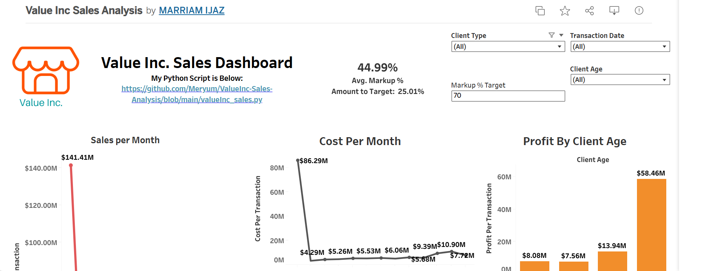
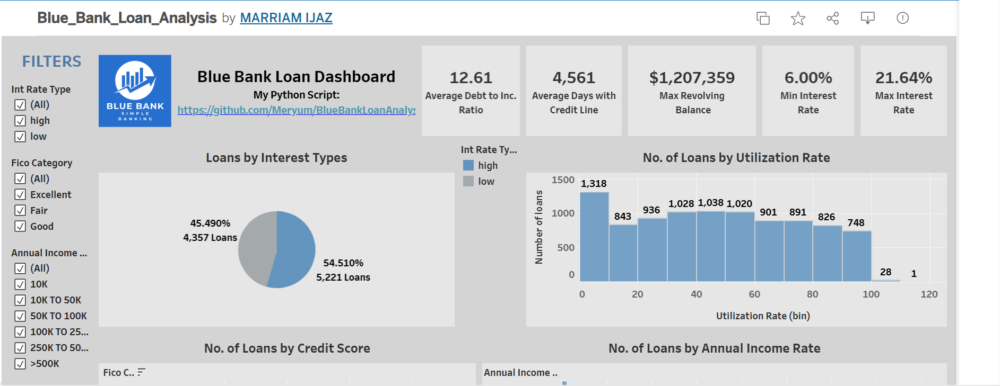
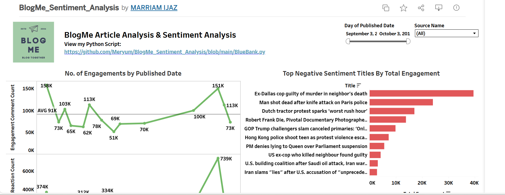
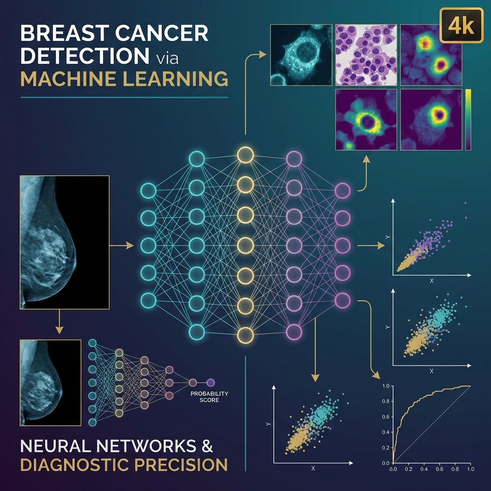

Marriam Ijaz
Data Scientist | University Instructor
Transforming data into meaningful insights and data-driven solutions.
Professional Background
Motivated and detail-oriented Computer Science graduate specializing in Data Science and Machine Learning. I have knowledge of machine learning algorithms, data analysis, predictive modeling, and statistical techniques, along with hands-on experience working on real-world data projects.
My technical skills include Python and SQL, along with data visualization tools such as Tableau, Matplotlib, and Pandas, with practical experience in data preprocessing, feature engineering, regression, classification, and sentiment analysis. I have also worked on building predictive models and transforming raw data into structured insights for analysis and decision-making.
I am passionate about using data-driven and AI-based approaches to solve real-world problems and enjoy exploring new tools and techniques to improve my skills.
I am currently seeking an AI/Data Science/ML internship or entry-level opportunity where I can contribute, learn, and grow in a professional, data-focused environment.
Technical Skills
Programming Languages
- Python
- SQL
- C++
- Java (Basic)
Data Science and ML
- Data Cleaning and Preprocessing
- Exploratory Data Analysis (EDA)
- Feature Engineering
- Classification and Regression Models
- Ensemble Learning
- Model Evaluation and Optimization
Libraries and Frameworks
- NumPy
- Pandas
- Scikit-learn
- TensorFlow
- Keras
- Matplotlib
- Seaborn
Databases
- MySQL
- SQL Server
Data Visualization
- Excel
- Google Sheets
- Matplotlib
- Tableau
Tools
- Jupyter Notebook
- Google Colab
- Git and GitHub
- Microsoft Excel
Soft Skills
- Critical Thinking
- Communication
- Teamwork and Collaboration
- Research
- Time Management
Languages
- English (Professional)
- Urdu (Native)
Machine Learning Projects
House Prices Prediction using Advanced Regression Techniques
- Developed a machine learning model to predict residential property prices using the Ames Housing dataset.
- Performed data cleaning, missing value treatment, feature engineering, and exploratory data analysis (EDA).
- Built and evaluated Linear Regression, Random Forest Regressor, and XGBoost Regressor models.
- Applied feature selection and model evaluation techniques to improve prediction accuracy.
- Compared model performance using regression metrics and selected the best-performing model for house price prediction.
Data Analysis Projects

Sales Analysis – Value Inc.

Blue Bank Loan Analysis

BlogMe Sentiment & Keyword Analysis
Breast Cancer Detection by Using Weighted Average Ensembles
Advisor: Dr. Abdur Rehman
Project Overview
Developed a breast cancer detection system using ensemble machine learning and deep learning techniques to improve diagnostic accuracy. The research focused on combining predictions from multiple models through a weighted average ensemble approach to achieve more reliable and robust classification results.
Key Contributions
- Worked on multiple breast cancer datasets, including WBC, WDBC, WPBC, BCCD, and Mammographic Mass using machine learning techniques.
- Handled data preprocessing challenges such as missing values and class imbalance to improve data quality.
- Applied feature selection techniques to identify important features and compared results with full feature sets.
- Developed an ensemble model combining multiple algorithms: Random Forest, XGBoost, SVM, ANN, CNN, and LSTM.
- Improved model performance by combining different classifiers to enhance accuracy and reduce prediction error (MAE) in breast cancer detection.

Key Results
- Achieved higher classification performance compared to individual base models.
- Demonstrated that weighted ensemble methods can enhance the accuracy and robustness of breast cancer detection systems.
Education
MS in Computer Science
Specializing in Data Science & Machine Learning
Bachelor's in Computer Science
Faculty of IT & Computer Science
Soft Skills and Languages
Languages
Contact Me
Open to collaborations and professional opportunities.